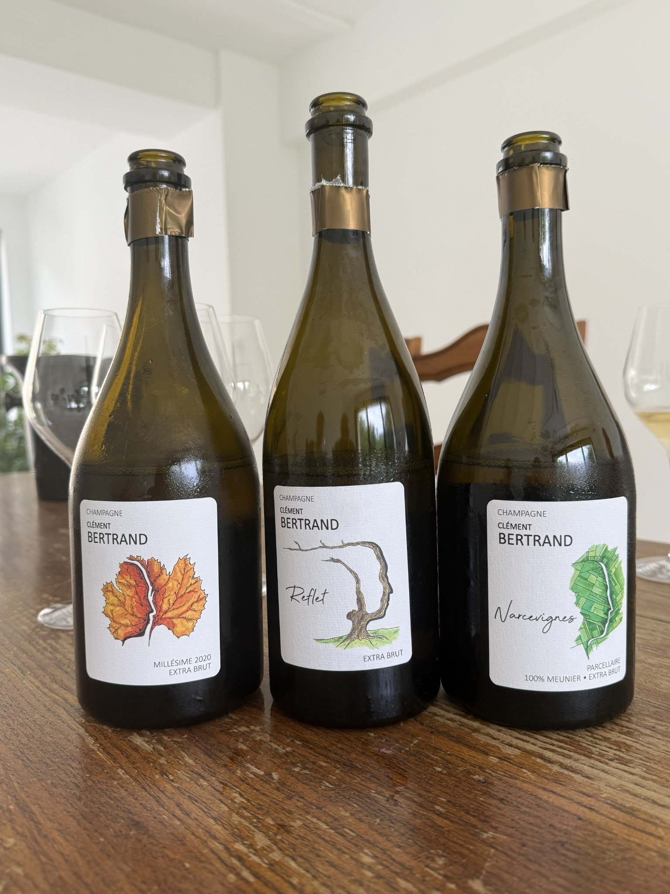

Prouilly · Montagne de Reims
Champagne Clément Bertrand
Historie & stil
Et ungt grower-hus fra Prouilly med fokus på parceller, lav dosage og et præcist udtryk fra sandet lerjord. Arbejdet i kælderen er diskret: delvis fadgæring, længere lagring og vinifikation uden at overdøve frugten. Stilen er ren, energisk og gastronomisk – med moden frugt, kalket mineralitet og en let brioche- og mandeltone i de fadlagrede cuvéer.

Vores note
Clément Bertrand er en venlig og seriøs ung mand. Han har arvet familiens vinmarker i Montagne de Reims, men i stedet for at sælge druerne til de store huse, som tidligere generationer gjorde, er han på en mission om at skabe sin egen vin med områdets karakter. Det lille vineri i Prouilly har han selv ombygget, så det i dag fremstår minimalistisk og moderne. Bertrands intense, terroirprægede stil er måske ikke for alle – men for os, der elsker champagne med kant og karakter, er han et stjerneskud på champagnehimlen.

Husets champagner
01
Reflet
Signatur · Extra Brut
En seriøs og gastronomisk champagne. Gylden med et let rosa skær og duft af skovbund og røde bær. Moussen er cremet og mundfyldende, mens smagen breder sig i noter af grape og citrusskal. Den behagelige bitterhed i finalen gør den oplagt til lyst kød, skaldyr eller grillede og ristede grøntsager.
- Druer
- 50% Chardonnay · 50% Pinot Noir
- Terroir
- Prouilly · sandet lerjord
- Høst
- 2022
- Kælder
- Op til 35% fad
- Lagring
- Min. 3 år
- Dosage
- 3 g/l
02
Narcevignes
Parcellaire · 100% Meunier
Helt sin egen – fra en sydvendt enkeltparcel i Prouilly. Ufiltreret og dybt gylden med gul frugt, citrus, frisk mandel, blide krydderier og kalket mineralitet. Otte måneder sur lie og op til 40% på fad tilfører Bertrands signatur: et strejf af bitterhed i finalen. En vin til mad, som vinder ved større glas og lidt tid til iltning.
- Druer
- 100% Meunier
- Mark
- Narcevignes · sydvendt
- Stokke
- Ca. 45 år
- Kælder
- Op til 40% fad
- Lagring
- 8 måneder på bærme
- Dosage
- 0 g/l